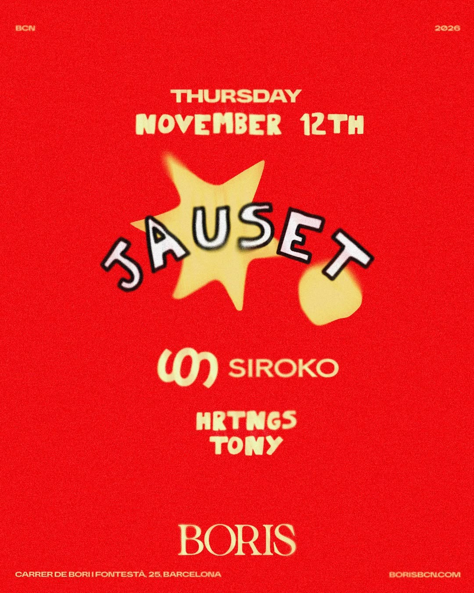

The night
- Thursday 12 November at Boris
- Hip-hop and house through the night
- Line-up: Jauset, HRTNGS and Tony
- The Siroko crowd, back together after Halloween
 Join community ↗
Join community ↗
SRK-004
Thursday 12 November · Boris
A Siroko night of hip-hop and house in Barcelona, with Jauset, HRTNGS and Tony.

The night
Details
Why it matters
After the Halloween takeover, SRK-004 moves Siroko into a new sound at a new venue: a hip-hop and house night at Boris.
SRK-004 FAQ
SRK-004 takes place at Boris, Carrer de Bori i Fontestà, 25, Barcelona.
Thursday 12 November 2026.
Hip-hop and house, with Jauset, HRTNGS and Tony on the line-up.
Tickets are sold on Fourvenues. Use the Buy Tickets button, where you will also find the entry details.